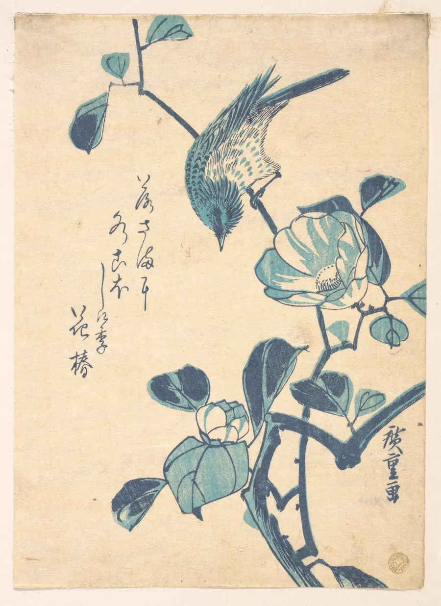
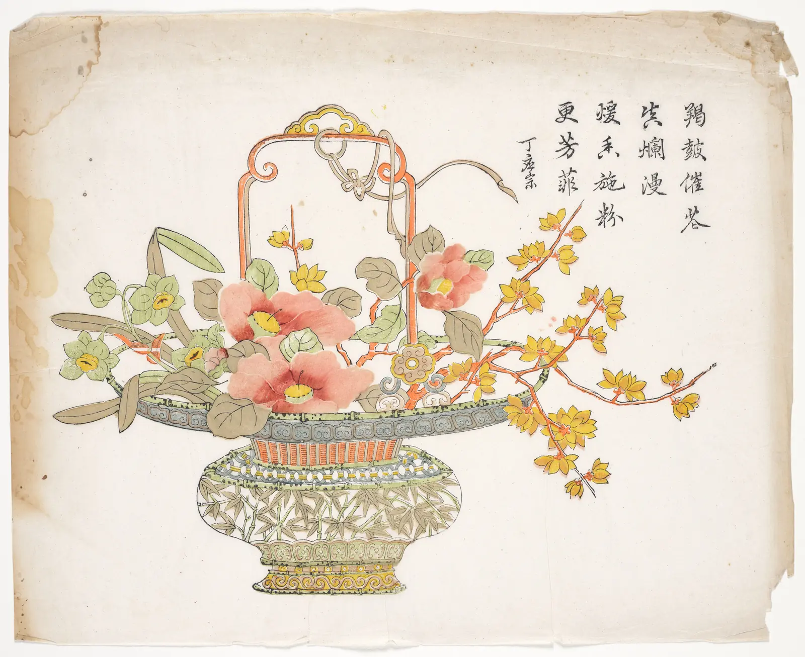
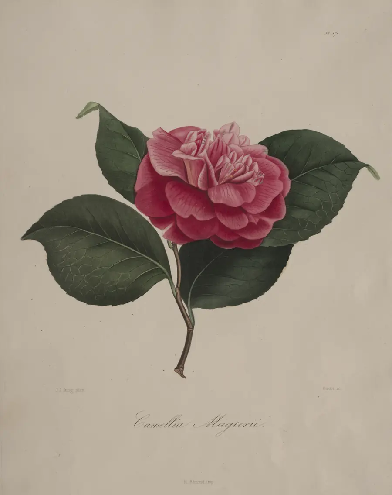
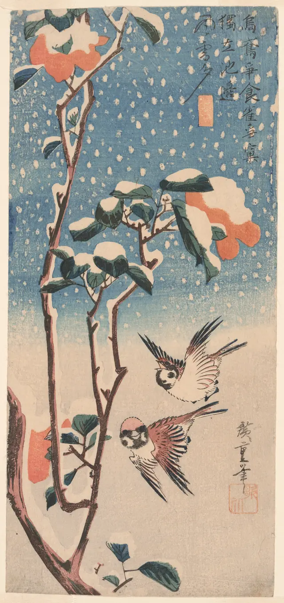

一只鸟，三块版。
广重用靛、红、墨三块版印出这张小品。我们照着重刻了一遍，把每块版落下的先后记了下来。
图：歌川广重《椿与鸟》，约 1833 · 大都会艺术博物馆 · CC0

十九个可以直接复制的组件，都来自同一间版画社的日常：卖一张版画、排一场套色课、印完一批订单。

广重用靛、红、墨三块版印出这张小品。我们照着重刻了一遍，把每块版落下的先后记了下来。
图：歌川广重《椿与鸟》，约 1833 · 大都会艺术博物馆 · CC0

较上周多 6 张，套色一次合格率 96%。
刻版师。十二年只刻花卉，最熟悉山茶叶脉的走向。
¥30 / 月
0 / 3 已完成
当前：刻版
三块版，印一张自己的山茶。
还剩 8 个座位
“装框挂上墙，才看出红版压得有多准。”
已选楮皮纸：红版的大色块会更匀。
看到喜欢的图版就收下，它们会排在这里。
待开始

广重的竖长条幅，卷着只露一截。
歌川广重，约 1831–33 · 芝加哥艺术博物馆 · CC0。自上而下：落雪、山茶、两只麻雀。
原木细框，不加玻璃，四边留 4 cm 衬纸。
夜里印墨版时，工作台只留一盏灯。指针移到画上，灯跟着走。
准备好了，再点亮工作台。
没有对得上的组件。换一个词，比如“表单”或“画轴”。